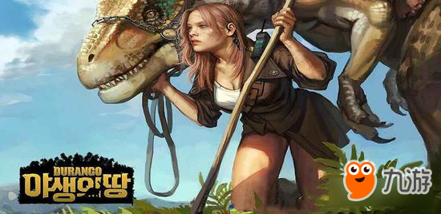
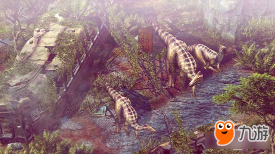
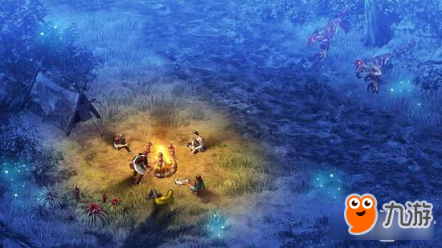

Nexon旗下What！Studio工作室宣布，《野生之地：杜兰戈（Durango Limited）》正式确定将会在2017年第四季度上市。
为了生存，在《野生之地：杜兰戈（Durango Limited）》开放的原始世界中，玩家需使用从之现代世界中带来的材料与科技，在危险的野生世界中开拓、培养与进化，并与成群结队的恐龙们共存，体验部落之间的战争抗衡。《野生之地：杜兰戈》的原始生物是游戏的生活环境与生态环境的一环，它们从成群结队地寻找水源，到共同对抗其它敌对群，恐龙不仅仅是被猎捕的敌人，同时也是可以被驯服、训练，甚至是骑乘战斗。随着游戏中的发展，玩家可以选择创造或加入强大的部落，或是单打独斗建造村落培养自己的影响力与权力，挑战敌方的部落进行实时进行PVP 或部落对战，决定谁是拥有最强大的部落。
《野生之地：杜兰戈》是一款次世代的MMORPG，游戏提供完整的开放世界的游戏体验，玩家可以自由地追寻多元的游戏架构，融合独特的探险与城市建造经验，搭配实时合作，对抗敌人的部落与巨大的恐龙。在未知的领土，玩家们会团结起来对抗肉食性恐龙，并在这个新世界中探索与成长。冒险者们将学习利用土地作为优势，打造武器、盔甲与工具，以便建造村落作为未来的堡垒。
What！Studio游戏总监Eunseok Yi表示：“《野生之地：杜兰戈》作为一款多元且动作的开放世界游戏，具备所有的乐趣与随机的惊喜！玩家们可以与朋友在任何时间、任何地点进行游玩。经过长达三年的研发期间，官方已经准备好将《Durango》交到玩家的手中，让玩家们共同发现世界、建立社群